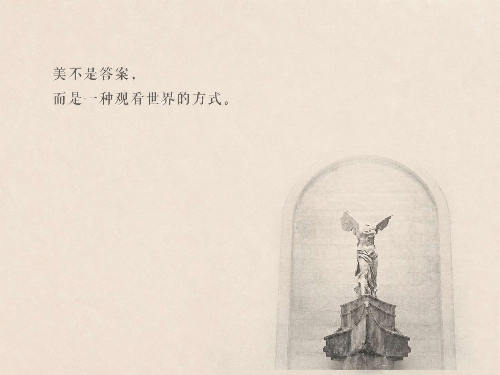

你落在文学里的哪一种天气？
先别急着定义自己，
让天气慢慢显现。
跟随第一感受作出选择，看见你的文学天气、人物气质与人格颜色。

你的气候带已经出现
你的文学天气
你的文学人物气质，像
这不是对你的完整定义，也不代表你会经历人物的命运；你们只是共享了某一种面对世界的方式。
人格颜色
艺术 ID
你落在文学里的哪一种天气？
跟随第一感受作出选择，看见你的文学天气、人物气质与人格颜色。

你的气候带已经出现
你的文学天气
这不是对你的完整定义，也不代表你会经历人物的命运；你们只是共享了某一种面对世界的方式。